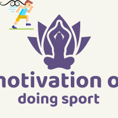

Home page
Site Plan
Sport Habit
Self-Motivation
This is some helpful information for knowing more about sport and it's important in life which can inspire people to do it daily.
Adults (more than 18 years old) are likely to reproduce the habits that they acquired
during childhood and adolescence (from 6 to 16 years old). For that reason, teachers
and parents have the responsibility to promote an active and healthy lifestyle in
children and adolescents. Even though every school subject should promote healthy
activities, Physical Education (PE) is the most important subject to foster well-being
habits associated to healthy lifestyle during sport practice and other kinds of active
tasks. Indeed, there are many factors that influence the acquisition of healthy habits
that should be taken into account when programs and activities are implemented in both
educational and extracurricular context. In this sense, psychological and social factors
are of utmost importance to achieve optimal experiences for an active and healthy
lifestyle.
However, due to the myriad of studies analyzing different factors in different
contexts, there could be confusion when programs and pedagogical strategies are applied
in educational or extracurricular contexts. The objective of this investigation is to
analyse the state of art of the psychosocial factors which influence the engagement
in physical activities and sport practice. The keywords used in this review were
mainly: “Self-Determination Theory,” “(intrinsic) motivation,” “Psychological need
satisfaction,” “physical activity and sport engagement,” “Elementary Education,”
“Secondary Education,” “Physical Education.” In addition, the Boolean data type
“and,” “or,” and “not” were also used. The articles were selected according to the
following criteria: (a) peer-reviewed original research published in international
journals indexed in JCR or SJR, (b) published in English or Spanish, (c) about
psychosocial factors which influence the physical activity and sport engagement,
(d) in educational or extracurricular context. Research articles selected were
found through Web of Science, Scopus, Google Scholar, SportDiscus (EBSCO-host),
ERIC, PubMed, Medline, and PsycInfo databases.
It was observed that physical
activities and sport practice engagement are closely related to psychological
factors. In particularly, intrinsic motivation was able to determine the active
participation in any activity, including physical activity and sport practice
during the implementation of Small-Sided Games and other kinds of pedagogical
strategies (e.g., Pedagogical Models). Motivation was also closely related to
flow state. Finally, these variables should be considered in order to organize
effective programs to promote an active and healthy lifestyle in Physical Education classes.
HOW DOES SELF-MOTIVATION BENEFIT SPORTS PERFORMANCE?
The best thing about self-motivation is you can take it with you anywhere and use it at
any time. It’s your inner voice and one of the best things to use when training, during a sports
match or to gear yourself up before facing a challenge. It’s easier said than done at times,
particularly if you aren’t seeing any visible successes or other areas of your life are interfering
in your energy levels. Optimal self-motivation leads to taking that leap, having a go, challenging
yourself, and ultimately contributes to a better sports performance where you are sustaining
a high-quality engagement while playing.
BENEFITS OF MOTIVATION ON SPORTS PERFORMANCE
The first thing is that nobody’s perfect! Performing to the best of your ability and challenging
yourself each time is tough. The results are often not seen until months or even years of
training have taken place. It can be difficult for anyone to stay motivated in the long-term,
particularly if they are training solo and have nobody to make them accountable. That’s just
one example of when motivating coaches and sports motivational speakers can step in.
Motivation is an essential part of sports performance. Self-motivation and extrinsic motivation
combined together form the best kind of motivation and encourage goal setting and working hard
to reach that goal.3